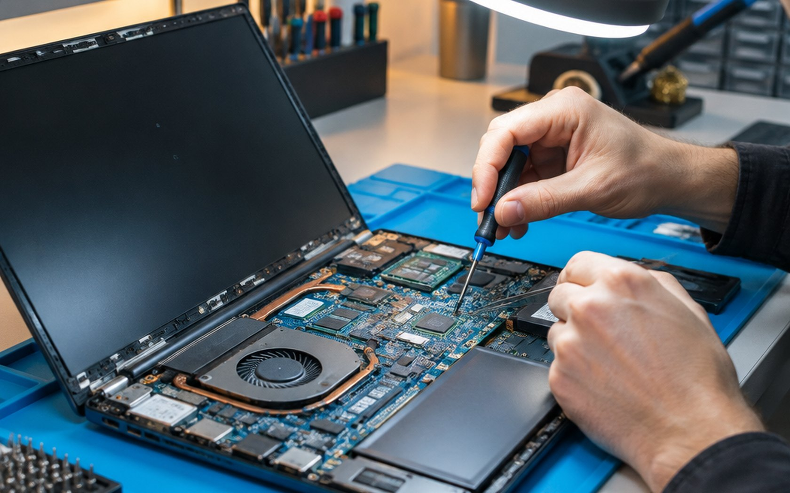
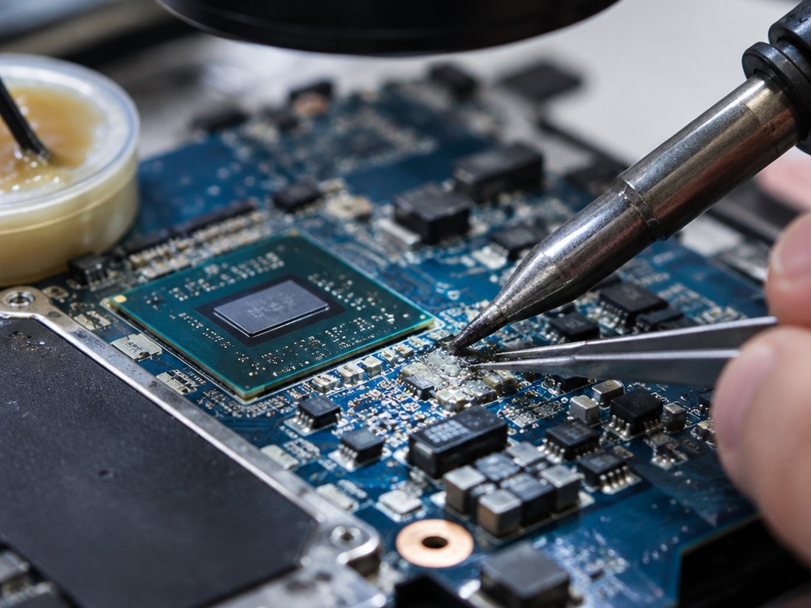
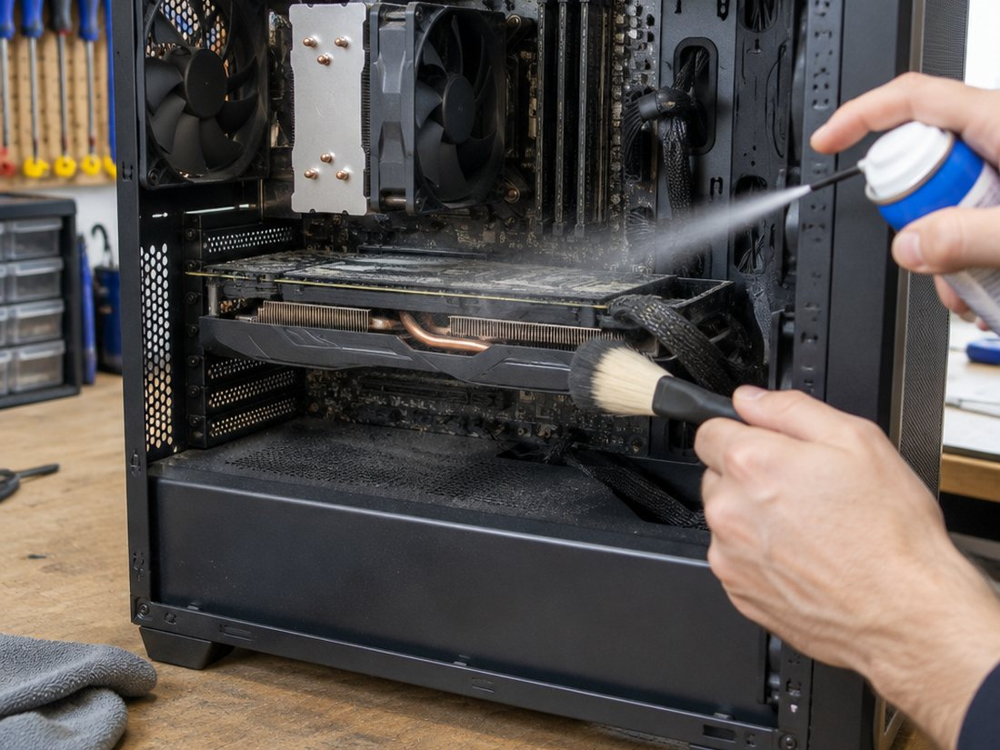
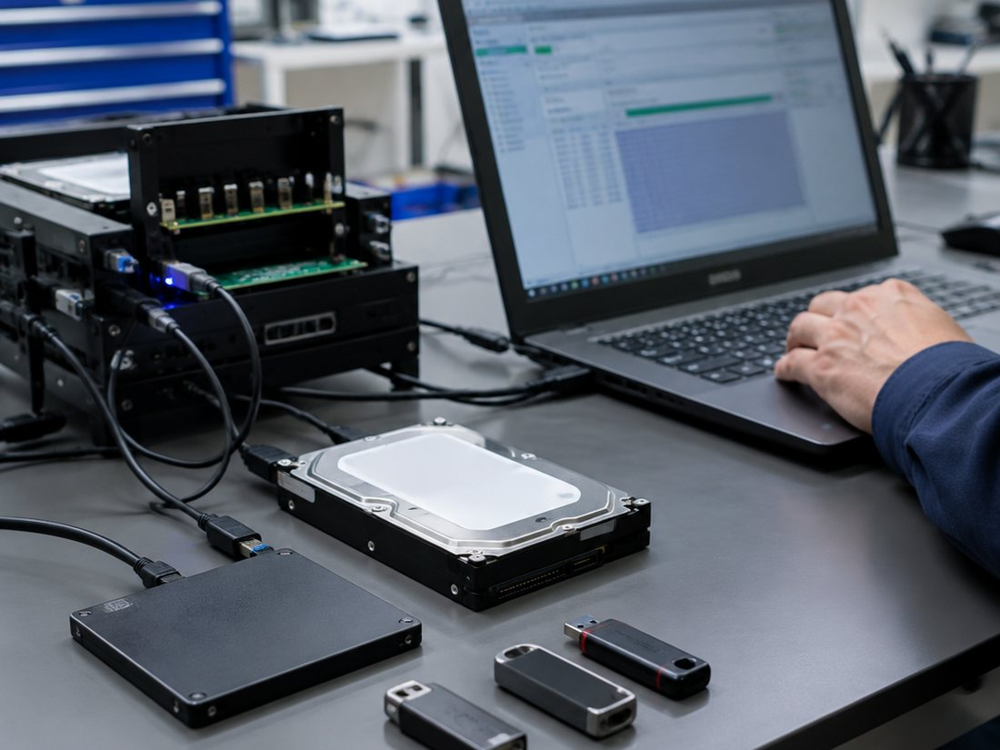

Сначала нахожу причину, потом называю цену и согласую работы. Материнские платы, цепи питания, разъёмы, матрицы, охлаждение, восстановление после залития. Меняю только то, что действительно вышло из строя.


Материнские платы, цепи питания, разъёмы USB, HDMI и Type-C, матрицы, клавиатуры, аккумуляторы, охлаждение, ремонт после залития и коротких замыканий.

Диагностика комплектующих, блоки питания, замена видеокарт и памяти, чистка, термопаста, сборка с нуля под задачи и бюджет, установка Windows.

HDD, SSD, USB-флешки, карты памяти. Если диск не определяется — сначала пробую достать данные, а не форматировать.
Пять шагов без сюрпризов в конце.
Описываете симптом: не включается, шумит, греется, залили, не видит диск. По симптому уже понятно, с чего начинать.
Определяю, что именно вышло из строя, насколько сложный ремонт, какие комплектующие нужны и целесообразно ли ремонтировать.
Называю ориентировочную стоимость и срок. Ремонт начинается только после вашего согласия.
Аккуратная работа с техникой, качественные комплектующие, без замены исправных деталей.
Проверяю устройство под нагрузкой, отдаю с гарантией на выполненные работы.
Стоимость зависит от неисправности и комплектующих. После диагностики называю ориентировочную сумму и согласую её с вами до начала работ — сюрпризов в конце не будет.
Часто да, если не включать его и не сушить феном. Чем раньше техника попадает на стол, тем выше шанс спасти плату и данные.
Не форматируйте и не переустанавливайте систему: это усложняет восстановление данных. Сначала диагностика накопителя, потом решение.
Да, ремонт и обслуживание электронной техники, включая приставки. Опишите симптом по телефону — скажу, берусь ли и что по срокам.
Два номера: +375 (33) 325-11-70 и +375 (25) 700-12-18. Приём звонков с 7:00 до 23:00. Можно написать в WhatsApp или оставить заявку на сайте.
Чем точнее симптом, тем быстрее скажу причину и порядок цены.
Позвоните или напишите: подскажу по симптому, назову порядок цены и время диагностики.